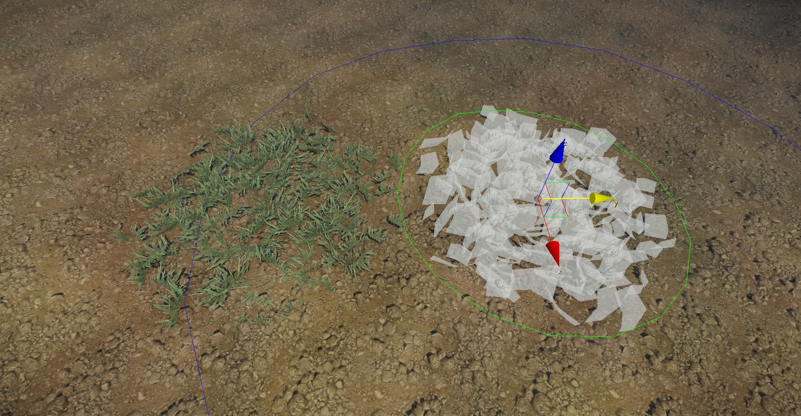
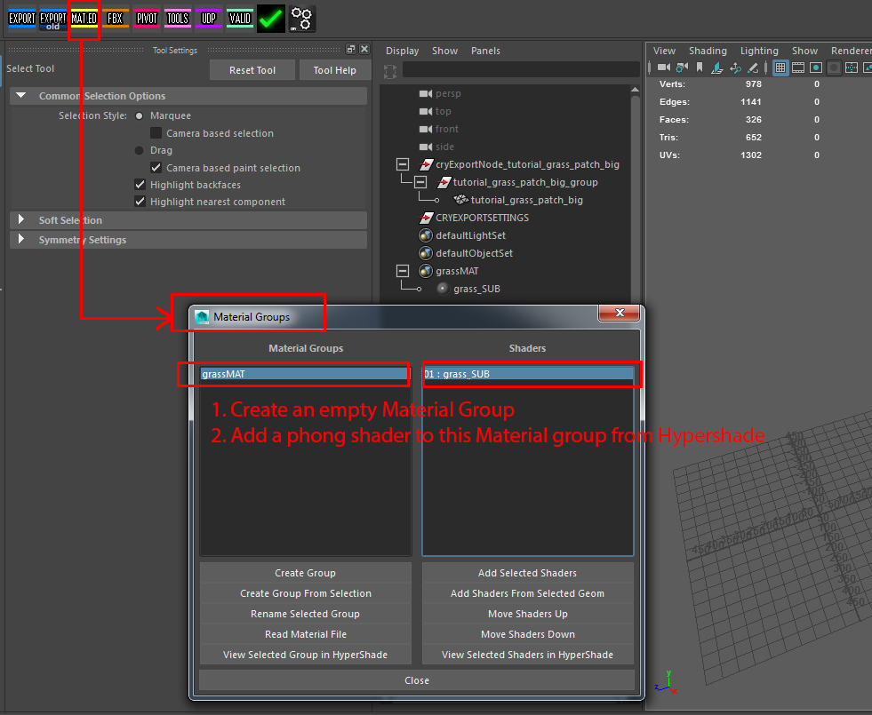
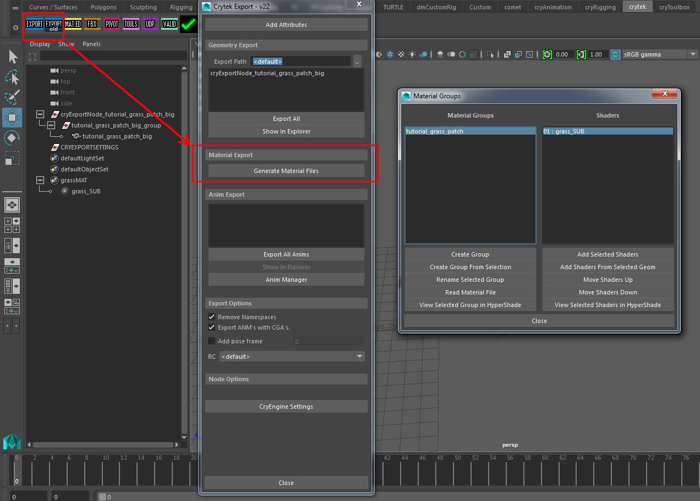
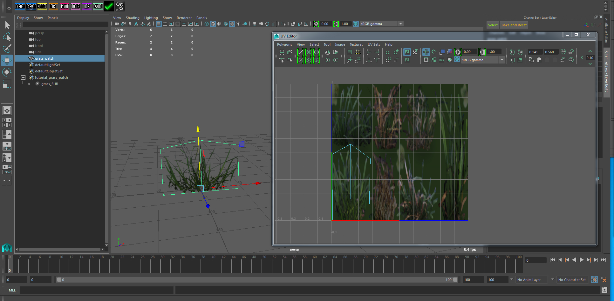
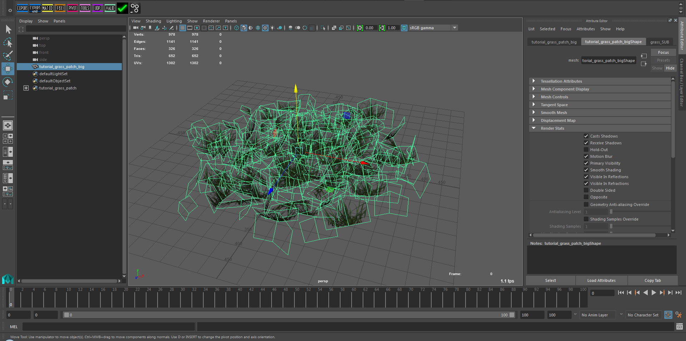
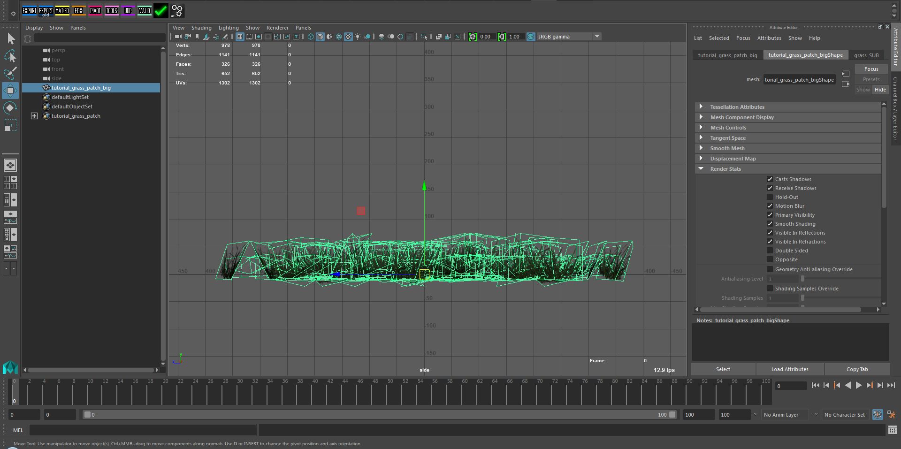
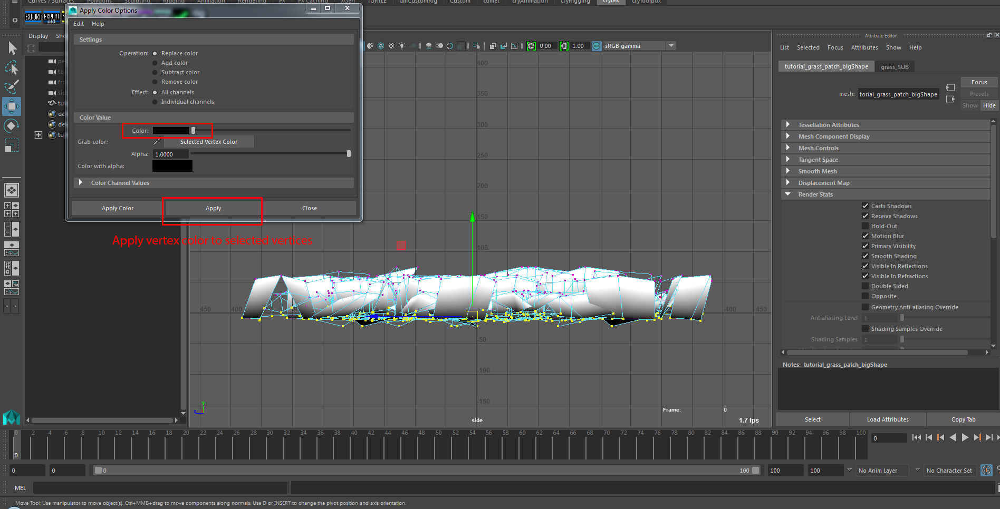
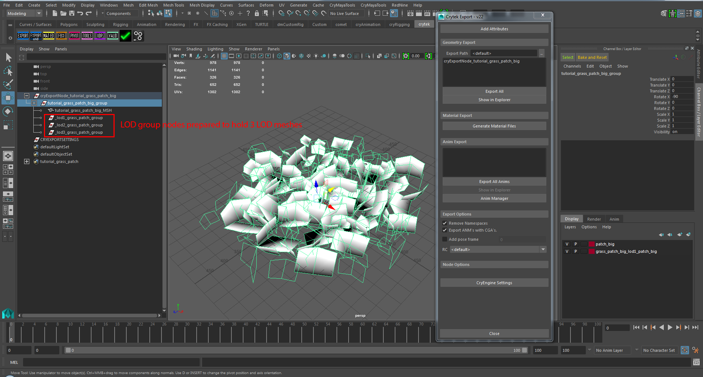
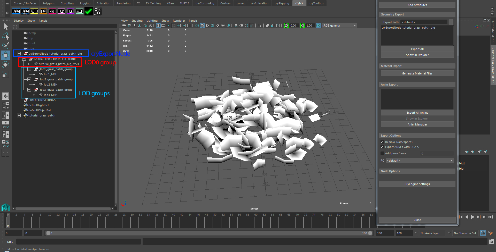
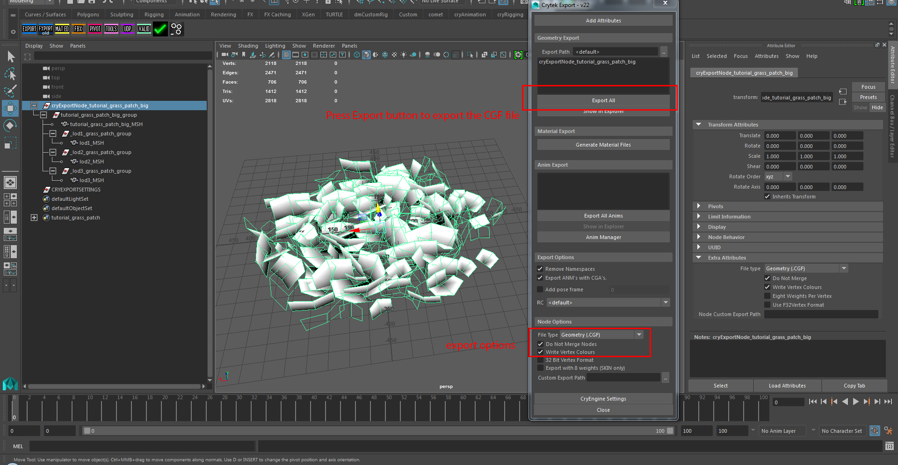

Обзор
В этом уроке вы познакомитесь с процессом создания простейшего растительного актива; участки травы. В нем рассматриваются основы параметров шейдера растительности и знакомится с инструментом растительности в CRYENGINE. «Участки травы» — это предыдущий метод, который мы использовали для создания ресурсов травы для ENGINE. Хотя этот метод все еще действителен, и его стоит знать, наш предпочтительный и текущий метод создания травы — это использование технологии Merged Mesh (MM).

Рис1: Готовая сцена с использованием участков травы.
Пример ниже (Рис2) показано создание участков травы с помощью инструмента растительности. Тот, что справа, показан в виде выделенных плоскостей.

Рис.2: Травяные объекты в обычном и выделенном виде плоскостей.
Учебные файлы
Исходная сцена Maya с экспортированными файлами CRYENGINE:
Предварительные требования для этого урока
Прежде чем продолжить изучение этого руководства, обязательно прочтите и усвойте следующие темы:
Полезная информация
При работе над активом помните следующее:
- Обычно версии объединенной сетки и травы не требуют физического прокси.
- Если в параметрах генерации шейдера включить флаг «трава», то карта нормалей (оптимизация) вам не понадобится.
- Каждый размещенный участок травы имеет свой собственный набор вызовов отрисовки. Объединенная сетка травы не делает этого — она объединяет куски.
- Не превышайте диаметр 8 метров для больших участков травы. Этот размер доказал, что обеспечивает хороший баланс между производительностью и покрытием поверхности.
- Используйте как можно меньше полигонов при создании повторяющегося объекта, такого как трава. Это значительно улучшит производительность.
- Добавьте LOD в актив. Уменьшите количество полигонов на 50 % (если возможно) на каждом шаге LOD.
Первоначальная настройка Maya
Для этого урока ресурс был создан в следующем каталоге:
<Your_Project>\Assets\Objects\tutorial\vegetation\01\grass_patch\
- Для начала сохраните сцену Maya в этом месте.
- Все экспортированные ресурсы также будут сохранены в этом каталоге.
- Некоторые текстуры, используемые в этом уроке, взяты из существующего ресурса в папке GameSDK. В этом случае мы укажем вам каталог, в котором они хранятся далее в этом руководстве.
Материал
Изначально нам необходимо подготовить материал, который будет нанесен на объект. Это позволяет нам дать визуальную ссылку на текстуру, которую вы используете при моделировании или формировании геометрических плоскостей участка травы. Для отдельных трав и участков травы вам нужен только один материал SubID для видимой части сетки. Кроме того, для объекта не требуется физический прокси, поскольку игрок должен беспрепятственно проходить сквозь объект.
Под установленной полкой Crytek щелкните значок MAT.ED вкладка. В Группы материалов В окне создайте новую группу материалов и добавьте в эту группу материалов стандартный шейдер Фонга. Чтобы создать новый шейдер, откройте файл Maya HyperShade для создания стандартного шейдера Фонга. Не имеет значения, выберете ли вы шейдер Фонга, Блинна или Ламберта. Вам все еще нужно настроить растительный материал в Sandbox Material Editor позже.

Рис.3: Создание новой группы материалов.
Экспортируйте материал
После добавления новой группы материалов с одним подматериалом вы можете открыть Maya и экспортировать файл материала *.MTL с помощью средства экспорта CRYENGINE.

Рис.4: Экспорт созданных файлов материалов.
Он будет сохранен в том же каталоге, что и исходная сцена Maya:
<tutorial_grass_patch.mtlYour_Project>\Assets\Objects\tutorial\vegetation\01\grass_patch\
Настройка объекта
Для участка травы мы определяем объект серией простых плоскостей, повернутых в случайных направлениях и с вариациями масштаба, чтобы добиться плотного вида с минимальной геометрией. Идея состоит в том, чтобы он выглядел цельным со всех сторон, то есть по X, Y и Z.
- Создайте полигональную плоскость и примените материал. tutorial_grass_patch к этому.
- Назовите полигональный объект grass_patch.
- Используйте инструменты моделирования Maya, чтобы разделить края, чтобы вы примерно получили форму, показанную ниже на рисунке. Рис5.
- Откройте UV Редактор Окно с выбранной геометрией для настройки UV одного объекта участка травы так, чтобы он помещался только вокруг текстуры.

Рис5: Модифицированная полиплоскость с отредактированными UV-развертками. - Используя эту настройку, продублируйте полигоны и распределите их по области, которую вы хотите покрыть патчем. Примените случайное вращение и масштабирование к патчу, чтобы нарушить однородность объекта (будьте осторожны, чтобы не переусердствовать и не растягивать текстуры!)
- Постарайтесь получить грубую шестиугольную форму для всего участка. Это работает лучше всего в большинстве ситуаций.
- Как только вы закончите распределение геометрии Объединить все отдельные плоскости вместе в один базовый объект и Удалить историю (переименован с grass_patch в tutorial_grass_patch_big).

Рис.6: Случайно распределенные объекты с участками травы, объединенные в одну сетку.
Настройка положения точки поворота
Убедитесь, что ось объекта находится примерно в центре и немного выше абсолютного низа объекта. Это небольшое вертикальное смещение поворота позволяет слегка утопить геометрию в пол, что полезно при выравнивании с функцией ландшафта в инструменте «Растительность». При таком использовании он будет усредняться (насколько это возможно), чтобы соответствовать изменениям высоты местности. Это помогает избежать зазора под травой и предотвращает ее плавание в пространстве.
Убедитесь, что вы не установили точку поворота слишком высоко, иначе вы потеряете нижнюю часть геометрии в ландшафте.

Рис.7: Местоположение поворота. Нажмите клавишу «Вставка», чтобы сместить любые повороты в Maya, и удерживайте нажатой клавишу X, чтобы привязаться к сетке.
Это дополнительная функция, которую можно применить к активу. Это не требуется, если вы не используете актив с определенной настройкой материала, например с деформацией вершин. Без раскраски вершин в ресурсе упрощенное движение, которое вы получаете при использовании деформации вершин, выглядит следующим образом: применяется по всей геометрии.
По умолчанию цвет вершин ассета белый (полное движение), но когда вы применяете черный цвет к базовым вершинам (где трава будет приросла к полу), тогда будут двигаться только кончики травы (потому что они окрашены в белый цвет). Это дает гораздо более реалистичный и правдоподобный вид.
В отличие от параметра изгиба, который можно применить внутри инструмента растительности и который автоматически фиксирует основание травы на полу. Цвет вершин используется для управления движением, когда вы применяете движение посредством деформации вершин внутри материала.
Чтобы изменить цвет любой вершины в вашей геометрии, нажмите Ф2 чтобы перейти в меню моделирования Maya. Под Сетчатый дисплей -> Применить цвет или Инструмент «Цвет вершин рисования», вы добавляете цвета вершин. Вместо рисования проще просто выбрать нижние вершины и придать им черный цвет, который позже интерпретируется как неподвижные вершины в настройках инструмента растительности. Повторите операцию с белым цветом для верхних вершин. Это позволит им свободно передвигаться.

Рис8: Применение цветов вершин.
Когда мы перейдем к части CRYENGINE этого руководства, мы продолжим рассмотрение вариантов использования цвета вершин внутри актива. А пока продолжайте создавать остальную часть актива.
Добавьте немного LOD в траву
Несмотря на то, что этот объект травы имеет очень простую геометрию и в общей сложности содержит более 600 полигонов, все же имеет смысл добавить к объекту LOD, чтобы мы могли потерять некоторые лишние полигоны на расстоянии.
Подготовка сцены Maya к экспорту
Если вы знакомы с рабочим процессом с 3ds Max на CRYENGINE, вы заметите, что для экспорта из Maya мы всегда должны:
- Изменение порядка узлов
- Создание пустых групп
- Воспитывайте их в правильном порядке
- Дайте им правильные имена
- Ориентируйте каждую группу так, чтобы она соответствовала требованиям CRYENGINE.
Когда дело доходит до добавления LOD, все становится еще сложнее. Вот правила:
- Создайте один cryExportNode, используя значки инструментов полки Crytek, чтобы удерживать участок травы.
- Храните каждый объект(ы) сетки LOD в узле группы LOD, следуя следующему соглашению об именах:
- Используйте "_lod#" префикс для узлов группы LOD. Замените символ # на номер LOD. В слове «LOD» регистр не учитывается, вы можете смешивать верхний и нижний регистр по своему усмотрению. Но вы должны включить символ подчеркивания «_» в качестве первого символа, за которым следует слово «lod», а затем цифра. Добавьте суффикс «_group», чтобы завершить имя: например. _lod1_grass_patch_group
- Создайте родительские нижние уровни детализации под полной сеткой рендеринга (можно сказать, это сетка "lod0").
- Переориентируйте все узлы группы, которые получат дочерние объекты сетки, чтобы они соответствовали требованию CRYENGINE: перейдите к виду сверху, любая положительная ось X группы должна указывать вправо, положительная ось Y должна указывать вверх.
В результате получится экспортируемая иерархия, показанная на изображении ниже:

Рис.9: узлы группы LOD для сеток..
Чтобы заполнить пустую группу LOD, используйте любые средства, имеющиеся в Maya или внешних программах, чтобы уменьшить сложность сетки LOD. Вы можете просто удалить некоторые грани участков с травой или использовать сетка -> Уменьшить инструмент, позволяющий Maya выполнить всю работу. Тебе решать. Однако есть правило, если вы хотите ему следовать:
- Постарайтесь уменьшить количество полигонов примерно на 50 % за шаг LOD (если возможно), сохраняя при этом общую форму.
Группируйте уменьшенные сетки LOD под соответствующими узлами группы, пока не получите следующее:

Рис. 10: Сгруппированные узлы группы LOD..
Экспортируйте геометрию
Поскольку мы уже подготовили нашу экспортную сцену для включения групп LOD, нам нужно только нажать кнопку Экспорт Кнопка для экспорта участка травы в файл *.CGF. Нажмите на cryExportNode и перейдите в Редактор атрибутов если вам нужно переоценить параметры экспорта, показанные ниже:

Рис11: Экспорт геометрии и ее настроек.
Продолжить CRYENGINE
Мы завершили настройку Maya части руководства. Чтобы продолжить, перейдите на следующую страницу, где мы настраиваем материал и используем инструмент «Растительность», чтобы разместить некоторые ресурсы травы.